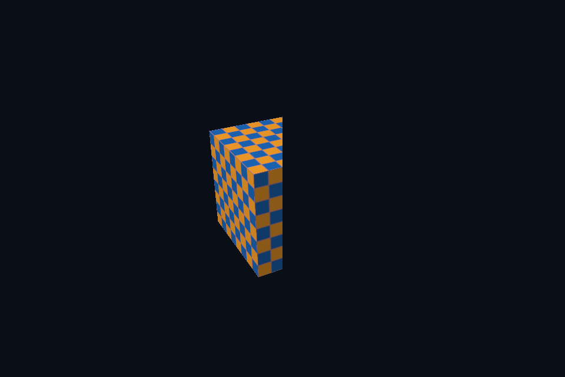

dx34_dynamic_scissor · 动态裁剪状态
54 课目录
目的与实际执行
RSSetViewports 与 RSSetScissorRects 负责动态矩形，RasterizerState.CullMode 和 RenderTargetWriteMask 在 PSO 内。缩窄 viewport 会改变映射比例；缩窄 scissor 则只遮住原画面的一部分。 本例使用 FrontCounterClockwise=TRUE 识别模型外表面；FALSE 会把本应可见的外面剔除，看到立方体内部。
本程序有独立实验选择与验证路径，公共实现集中在 advanced_labs.cpp。设备/API 检查、数值 compute 与图形渲染采用不同证据；不是每个程序都会弹出窗口。
构建和运行
cmake --preset dx12
cmake --build --preset dx12-debug --target dx34_dynamic_scissor --parallel 4
.\DirectX12\build\bin\Debug\dx34_dynamic_scissor.exe
深入学习：数据、接口与执行
本课的真实源码切片
来自 DirectX12/common/dx12_course.hpp，第 612—655 行；这是现有实现的局部摘录，末尾可能处于函数中间，不是可单独编译的完整程序。
c.cmd->RSSetScissorRects(1, &scissor);
if (scene) {
if (options.update)
options.update(*scene, time);
scene->render(width, height, time);
}
// 离屏课先画独立纹理，再把它作为 COPY_SOURCE 拷贝到交换链图像。
if (mode == 10) {
D3D12_RESOURCE_BARRIER b[] = {transition(offscreen.Get(),
D3D12_RESOURCE_STATE_RENDER_TARGET,
D3D12_RESOURCE_STATE_COPY_SOURCE),
transition(back.Get(),
D3D12_RESOURCE_STATE_PRESENT,
D3D12_RESOURCE_STATE_COPY_DEST)};
c.cmd->ResourceBarrier(2, b);
c.cmd->CopyResource(back.Get(), offscreen.Get());
auto restore = transition(offscreen.Get(),
D3D12_RESOURCE_STATE_COPY_SOURCE,
D3D12_RESOURCE_STATE_RENDER_TARGET);
c.cmd->ResourceBarrier(1, &restore);
}
auto old = mode == 10 ? D3D12_RESOURCE_STATE_COPY_DEST : D3D12_RESOURCE_STATE_RENDER_TARGET;
if (options.samples > 1) {
D3D12_RESOURCE_BARRIER barriers[] = {transition(multisample.Get(),
D3D12_RESOURCE_STATE_RENDER_TARGET,
D3D12_RESOURCE_STATE_RESOLVE_SOURCE),
transition(back.Get(),
D3D12_RESOURCE_STATE_RENDER_TARGET,
D3D12_RESOURCE_STATE_RESOLVE_DEST)};
c.cmd->ResourceBarrier(2, barriers);
c.cmd->ResolveSubresource(
back.Get(), 0, multisample.Get(), 0, DXGI_FORMAT_R8G8B8A8_UNORM);
auto restore = transition(multisample.Get(),
D3D12_RESOURCE_STATE_RESOLVE_SOURCE,
D3D12_RESOURCE_STATE_RENDER_TARGET);
c.cmd->ResourceBarrier(1, &restore);
old = D3D12_RESOURCE_STATE_RESOLVE_DEST;
}
ComPtr<ID3D12Resource> readback;
D3D12_PLACED_SUBRESOURCE_FOOTPRINT footprint{};
if (capturePath) {
auto b = transition(back.Get(), old, D3D12_RESOURCE_STATE_COPY_SOURCE);
c.cmd->ResourceBarrier(1, &b);
同主题跨 API 导航
先预测，再验证
先预测半视口与半裁剪的区别，再分别运行对应实验，检查模型宽高和可见区域。
参考推导：半视口把整幅几何压进较窄映射，半裁剪保留原映射但屏蔽右侧。它们可能显示相同面积，却不是相同几何变换。
验证与边界
运行 --smoke 执行有限自动检查。数值实验读取实际 GPU 结果，图形实验检查非空图像并可查看读回。交互重建与性能还需额外证据；窗口 renderer 当前保留串行等待，双槽计算实验不会被描述为完整多帧呈现引擎。
实际画面
